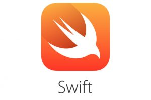
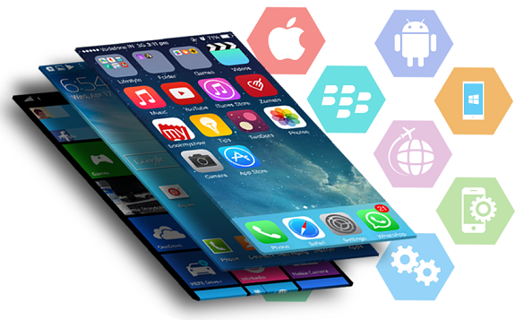
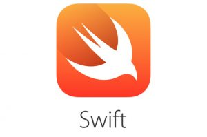
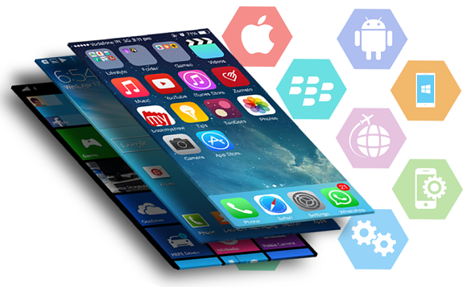

INSTITUTO TECNOLOGICO DE TIJUANA
UNIDAD TOMAS AQUINO
Tijuana, B.C., a 01 de septiembre de 2025
Carrera: ISC
Materia: Programacion Web
HORARIO: 18-19
ALUMNO: Erick Corrales
DOCENTE: Jose Jonathan Perez Castro
1. Introduccion a las tecnologías de móviles
1.1 Evolucion de los dispositivos móviles
1.2 Introducción a las tecnologías y herramientas móviles
1.3 Tecnologías emergentes
1.4 Tecnología de clientes ligeros

 



2. Arquitectura y entorno de desarrollo
2.1 Sistemas de operativos para dispositivos ligeros
2.2 Arquitecturas
2.3 Entorno de desarrollo
2.4 Requerimientos de los dispositivos ligeros
2.5 Lenguajes de programación
2.6 Configuraciones
2.7 Perfiles

3. Desarrollo de aplicaciones móviles
3.1 Metodología de desarrollo y ejecución
3.2 Uso de formularios Web móvil
3.3 Uso de controles
3.4 Creación Interfaces de usuario
3.5 Temas selectos de programación para móviles

4. Administración de datos en dispositivos móviles
4.1 Introducción
4.2 Modelo de objetos de acceso a datos
4.3 Maipulación de datos
4.4 XML
4.5 JSON